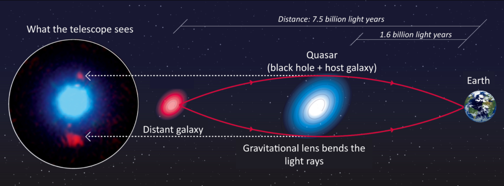
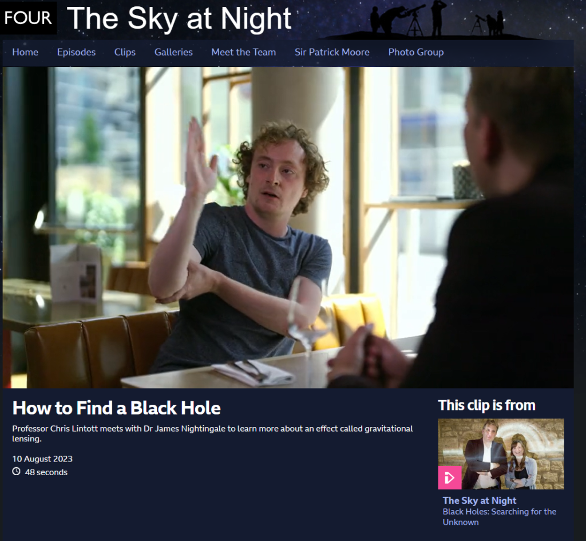
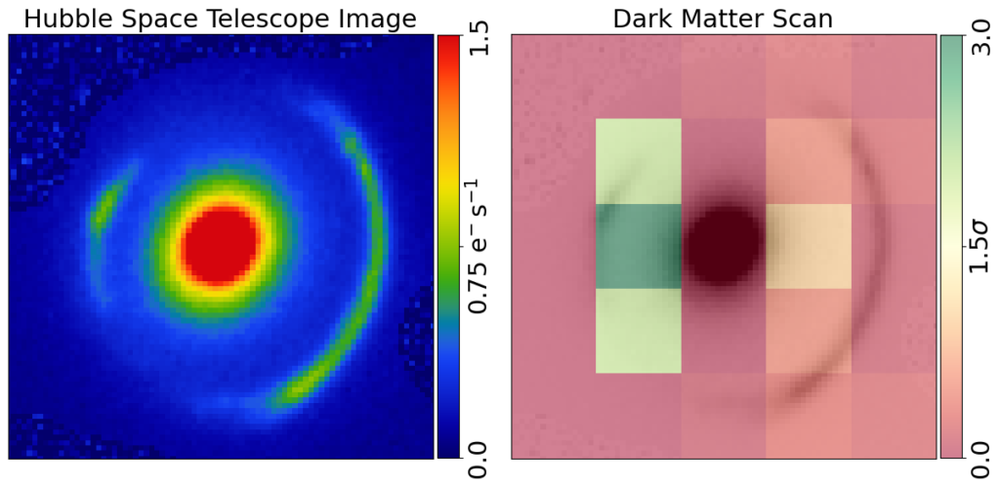
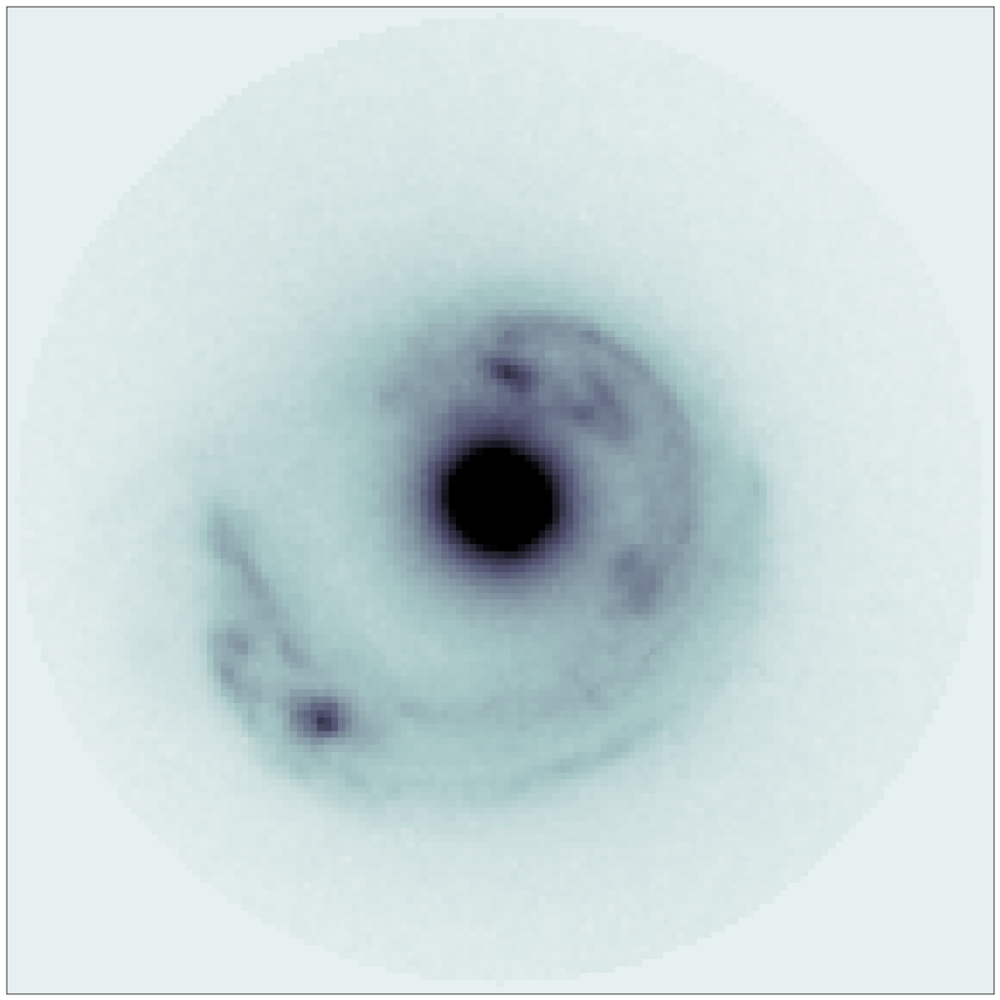
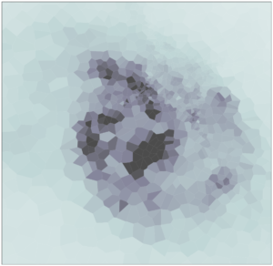

My cosmology research uses a phenomenon called strong gravitational lensing to study black holes, dark matter and the distant Universe.
Imagine two galaxies aligned perfectly along our line of sight to Earth. Light emanating from the background galaxy is deflected by the mass of the intervening foreground galaxy, allowing it to traverse multiple unique paths to the Earth.
Here is a simple 2D schematic of a strong gravitational lens:

(Image Credit: Image credit: F. Courbin, S. G. Djorgovski, G. Meylan, et al., Caltech / EPFL / WMKO, https://www.astro.caltech.edu/~george/qsolens/)
The Most Massive Black Holes:
In some extraordinary cases, this lensed light encounters massive black holes lurking at the core of the foreground galaxy. Recently, I discovered a black hole weighing an astonishing 33 billion times the mass of our sun, using this gravitational lensing technique.
You can see the incredible results in this video:
For this discovery I was interviewed on BBC4’s The Sky at Night:

You can watch the episode at this link: https://www.bbc.co.uk/programmes/m001pntf
The Smallest Dark Matter Clumps:
Gravitational lensing also sheds light on the elusive dark matter that pervades the cosmos. Our cosmological models suggest that dark matter exists in small clumps scattered throughout the universe. Occasionally, these clumps intersect with the lensed light, causing detectable gravitational disturbances.
In a recent study using images captured by the Hubble Space Telescope, I investigated one such gravitational lens, known as SDSSJ0946+1006, shown below:

Through meticulous analysis, I generated a “dark matter map,” highlighting regions where these elusive dark matter clumps reside in green. Remarkably, I uncovered a clump with a mass equivalent to around 1 billion suns.
This discovery, and others like it, provide crucial insights into the distribution of dark matter, unveiling its intricate role in shaping the universe.
Revealing the Most Distant Galaxies:
Furthermore, gravitational lensing acts like a cosmic magnifying glass, offering us unparalleled views of distant galaxies in breathtaking detail. Just as a magnifying glass focuses and amplifies light, strong gravitational lenses enhance the brightness of background galaxies, making them appear many times brighter than they would on their own. That’s why these lenses are aptly named “Cosmic Telescopes.”
In the captivating image captured by the Hubble Space Telescope, we behold SDSSJ1430-4150, a stellar example of a strong gravitational lens. At the heart of the image, a luminous foreground galaxy sits, surrounded by a nearly complete ring of light from the background source. This stunning display showcases the remarkable power of gravitational lensing to unveil the hidden treasures of the Universe.

Using advanced gravitational lens analysis software that I’ve developed, we can reconstruct the original appearance of the source galaxy before it underwent gravitational lensing. The figure below showcases one such reconstruction of SDSSJ1430-4150, unveiling a breathtaking grand design spiral galaxy. This familiar structure, reminiscent of galaxies we observe throughout the universe, offers us a glimpse into the intricate beauty of cosmic architecture.

PyAutoLens:

The analyses shown above use the open-source software I am the lead developer of, PyAutoLens, which you can checkout on GitHub: https://github.com/Jammy2211/PyAutoLens.
I aim to make strong lensing accessible to as many people as possible — if you want to learn more checkout the HowToLens Jupyter notebook lecture series which I wrote.
They will teach you what lensing is and how to analyse real Astronomy datasets.
PyAutoLens Links:
GitHub: https://github.com/Jammy2211/PyAutoLens
readthedocs: https://pyautolens.readthedocs.io/en/latest/
JOSS Paper: https://joss.theoj.org/papers/10.21105/joss.02825
Binder (This link runs PyAutoLens in your web browser with no installation, checkout ‘introduction.ipynb’ on the home page): https://mybinder.org/v2/gh/Jammy2211/autolens_workspace/HEAD
Science Papers:
Discovery of Ultramassive Black Hole: https://academic.oup.com/mnras/article/521/3/3298/7085506
Scanning for Dark Matter in Gravitational Lenses: https://academic.oup.com/mnras/article/527/4/10480/7458645